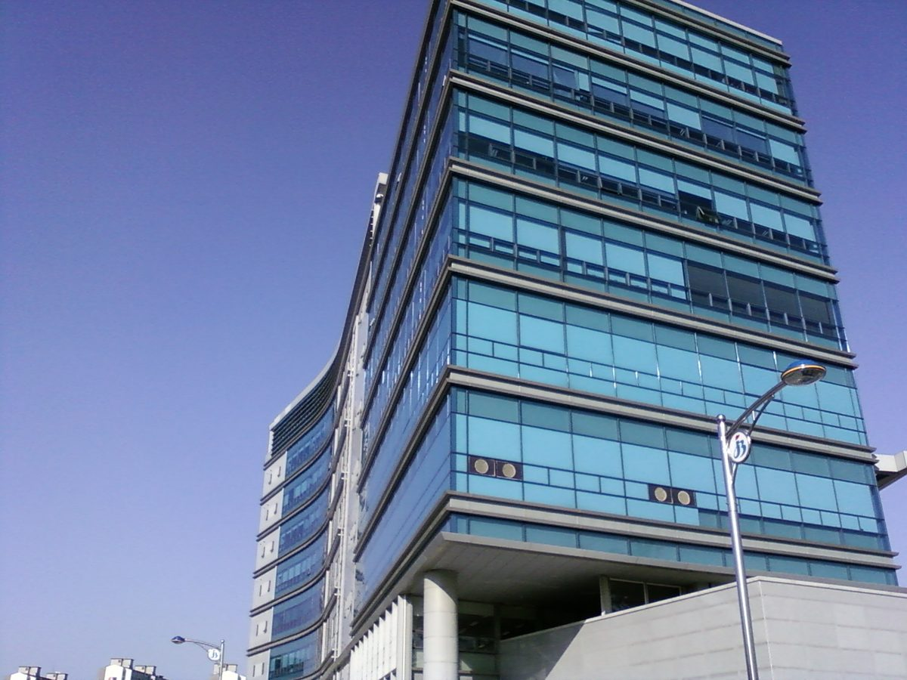

전북 16개교 지붕·주차장에 태양광…'햇빛이음학교' 시범사업, 업체 선정 들어가

교육부 특별교부금 약 25억 원, 본관동 8곳·주차장 4곳 등에 설치…나라장터 공고 5건(8개교)은 모두 수의 견적·본점 전북 요건, 나머지 8개교 공고는 아직 검색 안 돼
교육부 특별교부금 약 25억 원으로 전북 16개 학교에 태양광을 다는 '햇빛이음학교' 시범사업이 시공·감리 업체를 고르는 단계에 들어섰으며, 30일 현재 일부 학교는 업체 선정을 마쳤고 나머지 학교도 절차를 밟을 예정이다. 대상은 전주 4곳, 장수·부안 각 2곳, 군산·익산·정읍·남원·완주·진안·무주·임실 각 1곳으로 초등학교 9곳·중학교 3곳·고등학교 4곳이며, 태양광은 본관동 8곳, 주차장 4곳, 후관동 2곳, 교사동과 식생활관 각 1곳에 들어선다. 조달청 나라장터에 올라온 전북교육청 관련 태양광 공고 5건(8개교 대상)은 모두 수의 견적 방식으로, 전주 4개교 감리용역의 경우 추정금액이 2,843만7,000원이었고 본점이 공고 전날부터 개찰일까지 전북 안에 있는 업체만 견적을 낼 수 있게 했다. 계약 후보는 예정가 이하이면서 예정가의 88% 이상을 써낸 업체 가운데 가장 낮은 값부터 정해지는데, 이는 수의 견적에 적용되는 하한 규정이다. 나머지 8개교는 아직 나라장터에서 공고가 검색되지 않으며, 학교별 발전 용량과 사업비, 발전으로 아낀 돈을 어디에 쓸지는 알려지지 않았다. 사업이 처음 알려진 8월에는 전북교사노동조합이 소규모 학교까지 설치하는 것이 맞는지 의문을 제기하며 업체 선정의 투명성을 주문했고, 한국교총은 화재 안전과 교원 업무 부담, 20~25년 동안 이어질 유지관리 비용을 우려했다.
시민에너지 관점
16개교 가운데 주차장 4곳을 포함해 모든 설치 자리가 이미 있는 학교 건물과 부지라는 점은, 새 땅을 깎지 않고도 공공건물 지붕과 주차장만으로 발전소를 지을 수 있다는 것을 보여 준다. 교사들이 걱정한 화재·업무 부담·20~25년 유지관리 문제는 결국 '누가 이 설비를 끝까지 책임지느냐'의 문제이고, 교사에게 떠넘기지 않으려면 운영과 관리를 맡을 주체를 처음부터 정해 두어야 한다. 학부모와 지역 주민이 출자한 협동조합이 학교 지붕을 빌려 발전소를 짓고 관리하면 학교는 업무 부담을 덜고, 수익은 마을과 학교 교육에 다시 돌아가며, 학생들은 동네가 함께 만든 발전소를 날마다 보며 배우게 된다. 교육청과 지방정부는 시범사업이 끝난 뒤 학교 태양광을 넓힐 때 지역 주민 출자와 협동조합 관리를 선택지로 공고에 담아야 한다.
출처: 전북미래교육신문 2026-10-30 곽효준 원문 보기
全北の16校の屋根・駐車場に太陽光…「ヘッビッイウム学校」モデル事業、業者選定に着手
教育部の特別交付金約25億ウォン、本館棟8校・駐車場4校などに設置…調達サイト「ナラジャント」の公告5件（8校）はすべて随意見積・本店全北要件、残る8校の公告はまだ検索されず
教育部の特別交付金約25億ウォンで全羅北道（全北）の16校に太陽光を設置する「ヘッビッイウム（日差しをつなぐ）学校」モデル事業が施工・監理業者を選ぶ段階に入り、30日時点で一部の学校は業者選定を終え、残る学校も手続きを進める予定だ。対象は全州4校、長水・扶安各2校、群山・益山・井邑・南原・完州・鎮安・茂朱・任実各1校で、小学校9校・中学校3校・高校4校。太陽光は本館棟8校、駐車場4校、後館棟2校、校舎棟と食堂棟に各1校で設置される。政府調達サイト「ナラジャント」に掲載された全北教育庁関連の太陽光公告5件（対象8校）はいずれも随意見積方式で、全州4校の監理業務の推定金額は2,843万7,000ウォン、公告前日から開札日まで本店が全北にある業者だけが見積もりを出せる。契約候補は予定価格以下かつ予定価格の88%以上で入札した業者のうち最も安いところから決まり、これは随意見積に適用される下限規定だ。残る8校の公告はまだ検索されず、学校ごとの発電容量や事業費、節約した電気代の使い道は明らかになっていない。事業が初めて知られた8月には、全北教師労働組合が小規模校まで設置するのが適切か疑問を示して業者選定の透明性を求め、韓国教員団体総連合会（教総）は火災の安全、教員の業務負担、20〜25年にわたる維持管理費用を懸念した。
市民エネルギーの視点
16校のうち駐車場4校を含め、設置場所がすべて既存の学校の建物と敷地である点は、新たな土地を削らなくても公共建物の屋根と駐車場だけで発電所をつくれることを示している。教師が懸念した火災・業務負担・20〜25年の維持管理は、結局「誰がこの設備を最後まで責任を持つのか」という問題であり、教師に押し付けないためには運営と管理の担い手を最初から決めておく必要がある。保護者と地域住民が出資した協同組合が学校の屋根を借りて発電所を建て管理すれば、学校は業務負担を減らせ、収益は地域と学校教育に戻り、生徒は地域で共につくった発電所を毎日見ながら学ぶことになる。教育庁と自治体は、モデル事業の後に学校太陽光を広げる際、地域住民の出資と協同組合による管理を選択肢として公告に盛り込むべきだ。
出典: 全北未来教育新聞 2026-10-30 クァク・ヒョジュン 原文を読む
全北16所学校屋顶和停车场将装太阳能…"阳光连接学校"试点项目进入企业遴选阶段
教育部特别交付金约25亿韩元，本馆楼8所、停车场4所等…政府采购平台公告5件（8所学校）均为随意报价且要求总部位于全北，其余8所学校公告尚未检索到
利用教育部特别交付金约25亿韩元为全罗北道（全北）16所学校安装太阳能的"阳光连接学校"试点项目已进入遴选施工、监理企业的阶段，截至30日，部分学校已选定企业，其余学校也将陆续走完程序。对象学校为全州4所，长水、扶安各2所，群山、益山、井邑、南原、完州、镇安、茂朱、任实各1所，其中小学9所、初中3所、高中4所；太阳能将安装在本馆楼8所、停车场4所、后馆楼2所，教学楼和食堂楼各1所。政府采购平台"Narajangteo"上与全北教育厅相关的5件太阳能公告（对象8所学校）均采用随意报价方式，其中全州4所学校监理服务的估算金额为2,843.7万韩元，并规定只有从公告前一天到开标日总部一直位于全北的企业才能报价。合同候选人从报价不高于预定价格且不低于预定价格88%的企业中按最低价依次确定，这是随意报价适用的下限规定。其余8所学校的公告目前仍检索不到，各校发电容量、项目经费以及节省电费的用途均未公开。项目在8月首次曝光时，全北教师工会对连小规模学校也安装是否合适提出疑问，并要求确保企业遴选过程透明；韩国教员团体总联合会则担心火灾安全、教师工作负担以及长达20至25年的维护费用。
市民能源视角
16所学校中包括4处停车场在内，所有安装地点都是现有的学校建筑和用地，这说明不必开辟新土地，仅靠公共建筑屋顶和停车场就能建设发电站。教师们担心的火灾、工作负担和20至25年的维护问题，归根结底是"由谁对这些设施负责到底"的问题；要不把负担推给教师，就必须一开始就明确运营和管理主体。如果由家长和当地居民出资的合作社租用学校屋顶建设并管理发电站，学校可以减轻负担，收益回流到社区和学校教育，学生们也能每天看着社区共同建起的发电站学习。教育厅和地方政府在试点结束后扩大学校太阳能时，应把当地居民出资和合作社管理作为选项写进公告。
来源: 全北未来教育新闻 2026-10-30 Kwak Hyo-jun 查看原文
Solar on the roofs and parking lots of 16 Jeonbuk schools: "Haetbit Ieum School" pilot moves to contractor selection
About 2.5 billion won in Education Ministry special grants; panels on eight main buildings, four parking lots and more. All five tenders posted so far (eight schools) are negotiated quotations limited to firms headquartered in Jeonbuk; tenders for the other eight schools are not yet listed
A pilot project to install solar panels at 16 schools in Jeonbuk State with about 2.5 billion won in special grants from the Ministry of Education, called "Haetbit Ieum (Linking Sunlight) School," has entered the stage of choosing construction and supervision contractors; as of October 30, some schools had already picked contractors and the rest are expected to follow. The schools are in Jeonju (4), Jangsu and Buan (2 each), and Gunsan, Iksan, Jeongeup, Namwon, Wanju, Jinan, Muju and Imsil (1 each), and comprise nine elementary, three middle and four high schools; panels will go on eight main buildings, four parking lots, two rear buildings, and one classroom building and one cafeteria building. All five solar tenders related to the Jeonbuk Office of Education posted on the government procurement site Nara Marketplace, covering eight schools, use negotiated quotations; the supervision contract for four Jeonju schools had an estimated value of 28,437,000 won and was open only to firms whose head office was in Jeonbuk from the day before the notice through the bid opening. Contract candidates are chosen from the lowest quote upward among bids at or below the target price and no lower than 88% of it, a standard floor for negotiated quotations. Tenders for the remaining eight schools do not yet appear on the site, and the generating capacity and budget for each school, as well as how any savings on electricity will be used, have not been disclosed. When the project first became known in August, the Jeonbuk Teachers' Union questioned whether panels should go on even very small schools and called for a transparent contractor selection, while the Korean Federation of Teachers' Associations raised concerns about fire safety, extra work for teachers and 20 to 25 years of maintenance costs.
Citizen Energy View
Every installation site among the 16 schools, including four parking lots, is an existing school building or school ground, which shows that power plants can be built on public roofs and parking lots without clearing any new land. The teachers' worries about fire, workload and 20 to 25 years of upkeep come down to one question, who will be responsible for these systems to the end, and keeping that burden off teachers means naming an operator and manager from the start. If a cooperative funded by parents and local residents leased school roofs, built the plants and maintained them, schools would be spared the workload, the income would flow back into the neighborhood and into education, and students would learn every day from a power plant their community built together. When the pilot ends and school solar expands, education offices and local governments should write resident investment and cooperative management into their tenders as an option.
Source: Jeonbuk Future Education News 2026-10-30 Kwak Hyo-jun Read the original